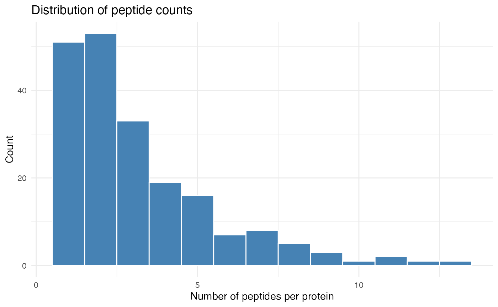
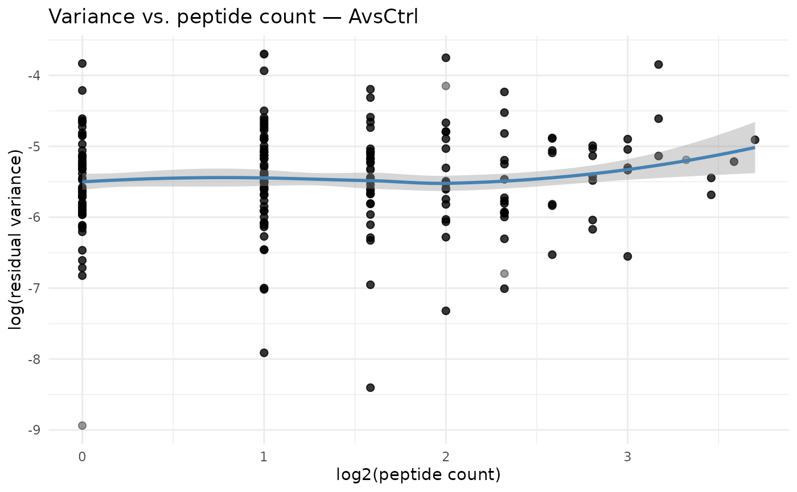
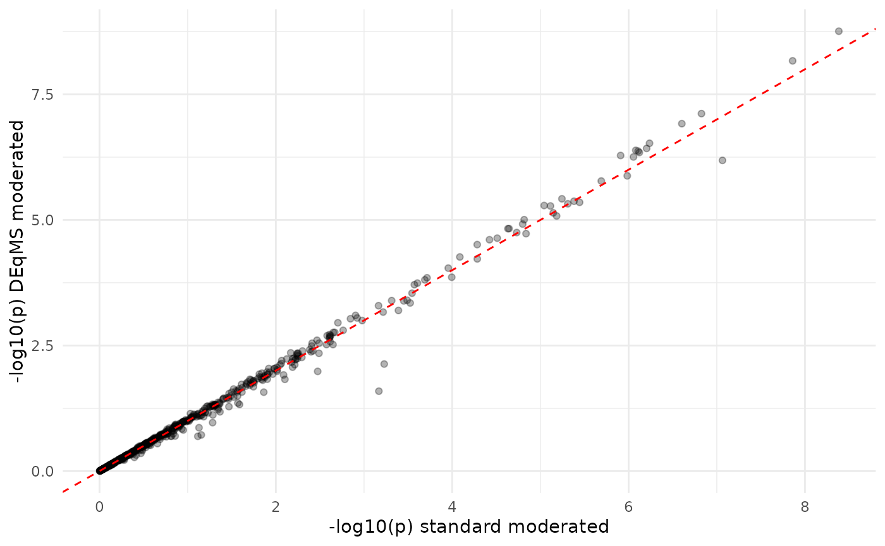
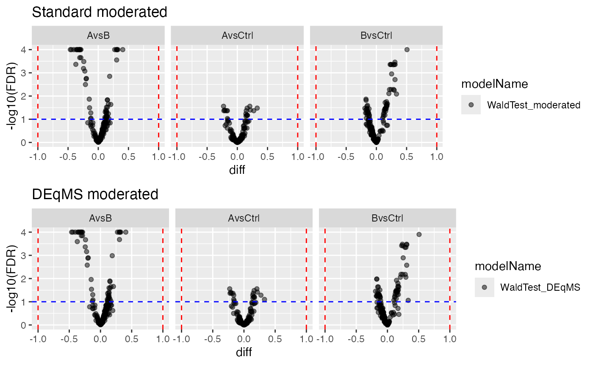
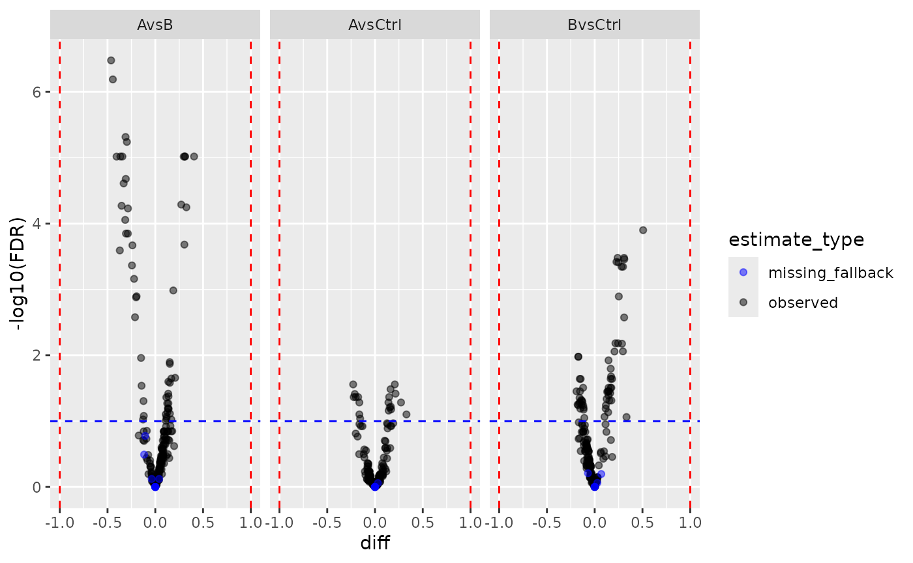

DEqMS-style Count-Dependent Variance Moderation
Witold E. Wolski
2026-07-29
Source:vignettes/DEqMS_Moderation.Rmd
DEqMS_Moderation.RmdPurpose
This vignette demonstrates ContrastsModeratedDEqMS, a
count-dependent variance shrinkage method inspired by the DEqMS approach
(Zhu et al., 2020). It is a drop-in alternative to
ContrastsModerated:
-
ContrastsModerated(standard): applies a single global prior variance to all proteins — every protein is shrunk toward the same value. -
ContrastsModeratedDEqMS(count-dependent): the prior variance depends on the number of peptides/PSMs used to quantify each protein. Proteins quantified from many peptides get less shrinkage (their variance is already well estimated); proteins from few peptides get more.
This matters in proteomics because quantification depth varies hugely across proteins. A protein quantified from 20 peptides has a much better-estimated variance than one from 2 peptides, and they should not receive the same prior.
The user-facing API is identical to ContrastsModerated:
same downstream methods (get_contrasts,
get_Plotter, to_wide,
merge_contrasts_results).
How it works
-
Fit LOESS:
log(sigma^2) ~ log2(peptide_count)— captures the count-dependent variance trend. -
Estimate prior df (d0): from the residual variance
around the LOESS curve, using the
trigammaInverseapproach (same math aslimma::squeezeVar). -
Count-specific prior variance:
s0^2(count)varies per protein, derived from the fitted LOESS curve. -
Posterior variance: Bayesian shrinkage combining
observed and prior:
var.post = (d0 * s0^2(count) + df * sigma^2) / (d0 + df) - Moderated t-statistics and p-values are recomputed with the posterior variance.
Data preparation
We use simulated protein-level data. The simulation includes a
nr_peptides column — the number of peptides per protein —
which is exactly the count we need.
library(prolfqua)
library(dplyr)
library(ggplot2)
istar <- sim_lfq_data_protein_config(Nprot = 200, weight_missing = 0.3)
lfqdata <- LFQData$new(istar$data, istar$config)
lfqdata$remove_small_intensities()
lt <- lfqdata$get_Transformer()
transformed <- lt$log2()$robscale()$lfq
transformed$rename_response("transformedIntensity")Define contrasts
contr_spec <- c(
"AvsCtrl" = "group_A - group_Ctrl",
"BvsCtrl" = "group_B - group_Ctrl",
"AvsB" = "group_A - group_B"
)Inspect peptide counts
At the low-level ContrastsModeratedDEqMS API we still
provide an explicit count table. The count column can be derived
directly from the LFQData object via
config$nr_children. In this simulated data set the count
variable is nr_peptides.
count_per_prot <- transformed$data_long() |>
group_by(protein_Id) |>
summarise(nr_peptides = max(.data[[transformed$nr_children_col()]], na.rm = TRUE))
ggplot(count_per_prot, aes(x = nr_peptides)) +
geom_histogram(binwidth = 1, fill = "steelblue", color = "white") +
labs(x = "Number of peptides per protein", y = "Count",
title = "Distribution of peptide counts") +
theme_minimal()
Standard moderation pipeline
mod_lm <- build_model(transformed, strategy_lm("transformedIntensity ~ group_"))
contr_lm <- prolfqua::Contrasts$new(mod_lm, contr_spec)
contr_moderated <- prolfqua::ContrastsModerated$new(contr_lm)
res_moderated <- contr_moderated$get_contrasts()DEqMS moderation pipeline
The only difference: wrap with ContrastsModeratedDEqMS
instead of ContrastsModerated, and provide the
protein-level peptide counts. If you use the higher-level
build_contrast_analysis(..., method = "deqms") facade, that
count extraction is done for you from the LFQData
object.
contr_deqms <- ContrastsModeratedDEqMS$new(contr_lm, count_per_prot, "nr_peptides")
res_deqms <- contr_deqms$get_contrasts()Diagnostic: variance vs. peptide count
This is the core diagnostic plot for the DEqMS approach. We expect
log(sigma^2) to decrease with increasing peptide count, and
the LOESS curve captures this trend.
# Get the unmoderated results with sigma and count
contr_raw <- contr_lm$get_contrasts()
contr_raw <- inner_join(
contr_raw,
count_per_prot,
by = "protein_Id"
)
# Plot for one contrast
one_contrast <- contr_raw |> filter(contrast == levels(factor(contrast))[1])
ggplot(one_contrast, aes(x = log2(nr_peptides), y = log(sigma^2))) +
geom_point(alpha = 0.4, size = 2) +
geom_smooth(method = "loess", span = 0.75, color = "steelblue", se = TRUE) +
labs(x = "log2(peptide count)",
y = "log(residual variance)",
title = paste("Variance vs. peptide count —", one_contrast$contrast[1])) +
theme_minimal()
Residual variance decreases with peptide count. The LOESS curve (blue) defines the count-specific prior variance.
Comparing results
Fold changes are identical
Both decorators wrap the same underlying Contrasts
object, so fold changes are identical.
merged <- inner_join(
select(res_deqms, protein_Id, contrast, diff_deqms = diff),
select(res_moderated, protein_Id, contrast, diff_moderated = diff),
by = c("protein_Id", "contrast")
)
cor(merged$diff_deqms, merged$diff_moderated, use = "complete.obs")## [1] 1P-values differ (count-dependent shrinkage)
The DEqMS approach produces different p-values because the prior variance is protein-specific rather than global.
merged_p <- inner_join(
select(res_deqms, protein_Id, contrast, p_deqms = p.value),
select(res_moderated, protein_Id, contrast, p_moderated = p.value),
by = c("protein_Id", "contrast")
)
cor(-log10(merged_p$p_deqms), -log10(merged_p$p_moderated), use = "complete.obs")## [1] 0.9959993
ggplot(merged_p, aes(x = -log10(p_moderated), y = -log10(p_deqms))) +
geom_point(alpha = 0.3, size = 1.5) +
geom_abline(slope = 1, intercept = 0, color = "red", linetype = "dashed") +
labs(x = "-log10(p) standard moderated",
y = "-log10(p) DEqMS moderated") +
theme_minimal()
P-values: DEqMS vs. standard moderated. Highly correlated but not identical — DEqMS adjusts for peptide count.
Volcano plots
pl_moderated <- contr_moderated$get_Plotter()
pl_deqms <- contr_deqms$get_Plotter()
gridExtra::grid.arrange(
pl_moderated$volcano()$FDR + ggtitle("Standard moderated"),
pl_deqms$volcano()$FDR + ggtitle("DEqMS moderated"),
ncol = 1
)
Volcano plots from both moderation approaches.
Merging with missing value imputation
ContrastsModeratedDEqMS works seamlessly with
ContrastsMissing and
merge_contrasts_results.
mC <- ContrastsMissing$new(lfqdata = transformed, contrasts = contr_spec)
merged_result <- merge_contrasts_results(prefer = contr_deqms, add = mC)
plotter <- merged_result$merged$get_Plotter()
plotter$volcano()$FDR
Wide format export
wide <- contr_deqms$to_wide()
head(wide)## # A tibble: 6 × 13
## protein_Id diff.AvsCtrl diff.BvsCtrl diff.AvsB p.value.AvsCtrl p.value.BvsCtrl
## <chr> <dbl> <dbl> <dbl> <dbl> <dbl>
## 1 0EfVhX~76… 0.143 -0.128 0.272 0.00575 0.0117
## 2 0lCgkE~28… -0.0330 -0.000541 -0.0325 0.506 0.991
## 3 0m5WN4~11… 0.163 0.145 0.0182 0.000510 0.00111
## 4 0vgFfT~54… 0.0782 -0.0569 0.135 0.202 0.390
## 5 0YSKpy~75… -0.00621 -0.0244 0.0182 0.896 0.604
## 6 0ZHbvZ~41… 0.0471 -0.0402 0.0873 0.283 0.344
## # ℹ 7 more variables: p.value.AvsB <dbl>, FDR.AvsCtrl <dbl>, FDR.BvsCtrl <dbl>,
## # FDR.AvsB <dbl>, statistic.AvsCtrl <dbl>, statistic.BvsCtrl <dbl>,
## # statistic.AvsB <dbl>Inspecting all columns
Use all = TRUE to see both the original and moderated
columns side by side.
res_all <- contr_deqms$get_contrasts(all = TRUE)
res_all |>
select(protein_Id, contrast, sigma, diff, statistic,
moderated.var.prior, moderated.df.prior,
moderated.var.post, moderated.statistic, moderated.p.value) |>
head(10)## # A tibble: 10 × 10
## protein_Id contrast sigma diff statistic moderated.var.prior
## <chr> <chr> <dbl> <dbl> <dbl> <dbl>
## 1 0EfVhX~7697 AvsCtrl 0.0659 0.143 3.07 0.00468
## 2 0lCgkE~2864 AvsCtrl 0.0531 -0.0330 -0.814 0.00459
## 3 0m5WN4~1168 AvsCtrl 0.0367 0.163 6.27 0.00444
## 4 0vgFfT~5498 AvsCtrl 0.0860 0.0782 1.29 0.00704
## 5 0YSKpy~7538 AvsCtrl 0.0632 -0.00621 -0.139 0.00468
## 6 0ZHbvZ~4125 AvsCtrl 0.0490 0.0471 1.36 0.00433
## 7 1HZ2jt~5236 AvsCtrl 0.0871 0.000509 0.00827 0.00474
## 8 3QLHfm~7883 AvsCtrl 0.116 -0.00875 -0.0756 0.00494
## 9 3QYop0~6494 AvsCtrl 0.0477 0.0796 2.04 0.00498
## 10 3Zhyy7~9324 AvsCtrl 0.0604 -0.0167 -0.338 0.00485
## # ℹ 4 more variables: moderated.df.prior <dbl>, moderated.var.post <dbl>,
## # moderated.statistic <dbl>, moderated.p.value <dbl>Note that moderated.var.prior varies per protein
(count-dependent), unlike in ContrastsModerated where it is
constant.
Session Info
## R version 4.5.2 (2025-10-31)
## Platform: x86_64-pc-linux-gnu
## Running under: Ubuntu 24.04.4 LTS
##
## Matrix products: default
## BLAS: /usr/lib/x86_64-linux-gnu/openblas-pthread/libblas.so.3
## LAPACK: /usr/lib/x86_64-linux-gnu/openblas-pthread/libopenblasp-r0.3.26.so; LAPACK version 3.12.0
##
## locale:
## [1] LC_CTYPE=C.UTF-8 LC_NUMERIC=C LC_TIME=C.UTF-8
## [4] LC_COLLATE=C.UTF-8 LC_MONETARY=C.UTF-8 LC_MESSAGES=C.UTF-8
## [7] LC_PAPER=C.UTF-8 LC_NAME=C LC_ADDRESS=C
## [10] LC_TELEPHONE=C LC_MEASUREMENT=C.UTF-8 LC_IDENTIFICATION=C
##
## time zone: UTC
## tzcode source: system (glibc)
##
## attached base packages:
## [1] stats graphics grDevices utils datasets methods base
##
## other attached packages:
## [1] ggplot2_4.0.3 dplyr_1.2.1 prolfqua_1.7.0
##
## loaded via a namespace (and not attached):
## [1] Rdpack_2.6.6 gridExtra_2.3.1 rlang_1.3.0
## [4] magrittr_2.0.5 clue_0.3-68 GetoptLong_1.1.1
## [7] otel_0.2.0 matrixStats_1.5.0 compiler_4.5.2
## [10] mgcv_1.9-3 png_0.1-9 systemfonts_1.3.2
## [13] vctrs_0.7.3 pkgconfig_2.0.3 shape_1.4.6.1
## [16] crayon_1.5.3 fastmap_1.2.0 backports_1.5.1
## [19] labeling_0.4.3 utf8_1.2.6 rmarkdown_2.31
## [22] nloptr_2.2.1 ragg_1.5.2 UpSetR_1.4.1
## [25] purrr_1.2.2 xfun_0.60 glmnet_5.0
## [28] jomo_2.7-6 logistf_1.26.1 cachem_1.1.0
## [31] jsonlite_2.0.0 progress_1.2.3 pan_2.0
## [34] broom_1.0.13 parallel_4.5.2 prettyunits_1.2.0
## [37] cluster_2.1.8.1 R6_2.6.1 bslib_0.11.0
## [40] stringi_1.8.7 RColorBrewer_1.1-3 limma_3.66.0
## [43] boot_1.3-32 rpart_4.1.24 jquerylib_0.1.4
## [46] Rcpp_1.1.2 iterators_1.0.14 knitr_1.51
## [49] IRanges_2.44.0 Matrix_1.7-4 splines_4.5.2
## [52] nnet_7.3-20 tidyselect_1.2.1 yaml_2.3.12
## [55] doParallel_1.0.17 codetools_0.2-20 lattice_0.22-7
## [58] tibble_3.3.1 plyr_1.8.9 withr_3.0.3
## [61] S7_0.2.2 evaluate_1.0.5 desc_1.4.3
## [64] survival_3.8-3 circlize_0.4.18 pillar_1.11.1
## [67] mice_3.19.0 foreach_1.5.2 stats4_4.5.2
## [70] reformulas_0.4.4 plotly_4.12.1 generics_0.1.4
## [73] S4Vectors_0.48.1 hms_1.1.4 scales_1.4.0
## [76] minqa_1.2.8 glue_1.8.1 tools_4.5.2
## [79] data.table_1.18.4 lme4_2.0-6 forcats_1.0.1
## [82] fs_2.1.0 grid_4.5.2 tidyr_1.3.2
## [85] rbibutils_2.4.1 colorspace_2.1-3 nlme_3.1-168
## [88] formula.tools_1.7.1 cli_3.6.6 textshaping_1.0.5
## [91] viridisLite_0.4.3 ComplexHeatmap_2.26.1 gtable_0.3.6
## [94] sass_0.4.10 digest_0.6.39 operator.tools_1.6.3.1
## [97] BiocGenerics_0.56.0 ggrepel_0.9.8 rjson_0.2.23
## [100] htmlwidgets_1.6.4 farver_2.1.2 htmltools_0.5.9
## [103] pkgdown_2.2.1 lifecycle_1.0.5 httr_1.4.8
## [106] GlobalOptions_0.1.4 mitml_0.4-5 statmod_1.5.2
## [109] MASS_7.3-65